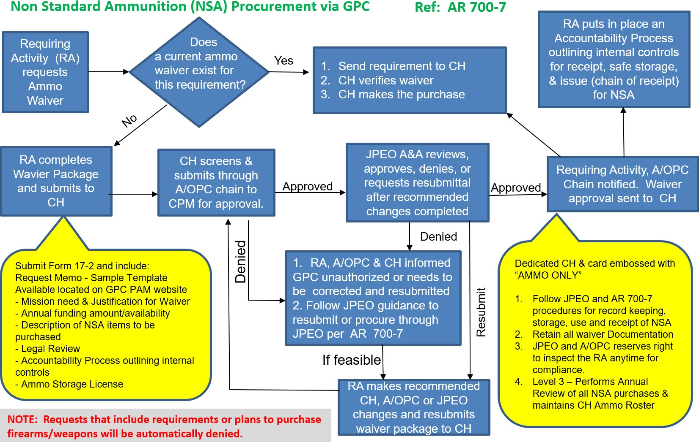

CHAPTER 16 - AMMUNITION AND WEAPONS
16-1. References
a. AR 5-13, Army Munitions Requirements, Prioritization, and Authorizations Management Policy, 31 March 2021
b. Army Techniques Publication (ATP) 4-35.1 Ammunition and Explosives Handler Safety Techniques
c. DoD FMR Volume 2A, Chapter 1, Section 010213
16-2. Authority to use the GPC for Non-Standard Ammunition (NSA) not from Army inventory
Per AR 5-13 paragraph 2-1b. and 2-7a(4), the Assistant Secretary of the Army (Acquisition, Logistics, and Technology), through the ODASA(P) and the Joint Program Executive Office Armaments and Ammunition (JPEO A&A), have implemented a waiver process (Figure 16-1) to procure small quantities of Army NSA for Army’s requirements not from Army inventory.
16-3. Approved Exceptions
a. Purchases of explosives, toxins, and ammunition are authorized only after JPEO-A&A has authorized an exception. This specifically includes small arms, explosives, weapon parts, accessories, and ammunition. Each exception is approved on a case-by-case basis by JPEO A&A and ODASA(P) CPM.
b. Waiver requests may be submitted to JPEO A&A via use of the JPEO A&A Waiver Request Checklist along with the supporting documentation identified below. Forward the waiver request and supporting documentation to your Level 4 A/OPC.
1) Justification for Waiver and Mission Requirements stated in a signed memorandum on the requesting organization’s official letterhead
2) Internal Controls (safe storage)
3) Ammunition Storage License
4) Accountability Processes
5) Funding Type (NAF or PAA only)
6) Legal review
c. The Level 4 A/OPC will submit the completed request packet to the Level 3 A/OPC for submission to JPEO-A&A and the Army GPC CPM for review/approval.
d. JPEO-A&A provides a recommendation to concur or non-concur with the waiver request to the ODASA(P) CPM. If JPEO-A&A concurs with the request and the request justifies inclusion in the AFARS Appendix EE list of approved exceptions to policy, the ODASA(P) will approve the waiver request. If JPEO-A&A non-concurs with the waiver request, JPEO-A&A will return the request with a non-concurrence to the requesting organization. If the waiver request is approved by the ODASA(P), the activity will be authorized the exception to policy in compliance with Army policy.
e. A dedicated GPC is mandatory for such approved exceptions to policy. The dedicated GPC will be identified by a third line embossing as “AMMO,” providing transparent identification for ammunition purchases via GPC for Army reporting purposes.
16-4. Funding Non-Standard Ammunition (NSA)
a. The Deputy Chief of Staff (DCS) G – 37/TRA validates and authorizes all NSA requirements except for organizations in AR 5-13 “Army Munitions Requirements, Prioritization, and Authorizations Management Policy” paragraphs 2–1b and 2-7 of this regulation, when they are procuring NSA for their respective requirements and not requesting NSA from Army inventory.
b. Policy memorandum for procurement of NSA dated 8 Aug 2008 establishes Army policy for NSA. This memorandum directs all Army NSA procurements be forwarded to JPEO A&A to execute. If valid reasons exist, making it impractical for JPEO A&A to procure NSA, the procuring organization will coordinate with JPEO A&A in writing. The JPEO A&A will have final approval authority to allow other Army organizations to procure Non-Standard Ammunition by following the exception to policy procedures in this chapter.
c. Procurement of Ammunition, Army (PAA) is the only appropriation authorized for ammunition procurement within the Army. JPEO A&A will make the determination if any other funding may be used when using the GPC. Alternatively, Research, Development, Test, and Evaluation (RDT&E) appropriations can be used to procure end items, weapons, equipment, components, materials and services required for development of equipment, material, or computer application software, where applicable.
16-5. Explosives, Toxins, and Ammunition Definitions
a. Ammunition (per 18 USC 921(a)(17)). The term means ammunition or cartridge cases, primers, bullets, or propellant powder designed for use in any firearm.
b. Non-Standard Ammunition (NSA) . Munitions that have not been safety tested and type classified for U.S. Army use. Munitions and explosives that are not managed by National Inventory Control Points, do not have a national stock number (NSN) and cannot be procured or requisitioned through the U.S. Army supply system.
c. Arms . DoD 5100.76-M defines a weapon that will or is designed to expel a projectile or flame by the action of the explosive, and the frame or receiver of any such weapon. Arms is a specified subset of Dangerous Weapons and all provisions for procuring, securing, and accounting for Arms will also specifically apply to all manner of silencers, mufflers, or suppressors.
d. Arms Parts . Arms parts are a subset of “Arms” and defined as any item required to effect a function of the firing cycle, but not an Arm in and of itself.
e. Arms Accessories . Arms accessories are anything not defined/covered by the previous definitions. Arms Accessories would include, by specific delineation/enumeration, detachable magazines. This would specifically include all manner of sights, optics, slings, bipods, etc., that are available in the commercial marketplace.
f. Weapons. The term “weapon” means a weapon, device, instrument, material, or substance, animate or inanimate, that is used for, or is readily capable of, causing death or serious bodily injury, except that such term does not include a pocket knife with a blade of less than 2½ inches in length. Weapons include but are not limited to the following: Any knife having a switchblade, automatic opener, or spring-loaded blade and/or disguise to resemble another item; martial arts devices (e.g., blackjacks) or other devices (e.g., brass knuckles to amplify the effect of a bare-handed blow). Weapon does not include single-edge (it is permissible to have a saw on the edge opposite the blade) fixed or folding bladed knives or “multi-tools” with a blade length not to exceed four inches.
16-6. Approved Exceptions
Organizations granted an approved exception to purchase small quantities of commercial-off-the-shelf Non-Standard Ammunition (NSA) and/or Small Arms Parts are listed and maintained on the PAM website: https://armyeitaas.sharepoint-mil.us/sites/ASA-ALT-PAM-ProcProc/SitePages/GPC.aspx .0.
16-7. NSA Exception Process
Figure 16-1: Army NSA Exception Process

a. All organizations/activities will ensure proper accountability of all NSA, whether contained in sets or issued as individual items.
b. All organizations/activities will comply with safety, storage and transportation procedures in regulations and directives governing those functions including reference 16-1.b.
c. The Army’s goals are to maintain ammunition supply activity supply levels as close to the validated need as possible while avoiding shortfalls and overages.
d. Provide an annual report of expenditures. All organizations/activities with an exception to use the GPC to purchase small quantities of NSA are required to provide a report, through command channels, to the ODASA(P) CPM and JPEO A&A upon completion of the event for which the NSA was required and at the end of each FY. The report of expenditures is due by October 31 and must include for each munition the following information:
1) Nomenclature.
2) Quantity procured.
3) Quantity and location of remaining munitions.